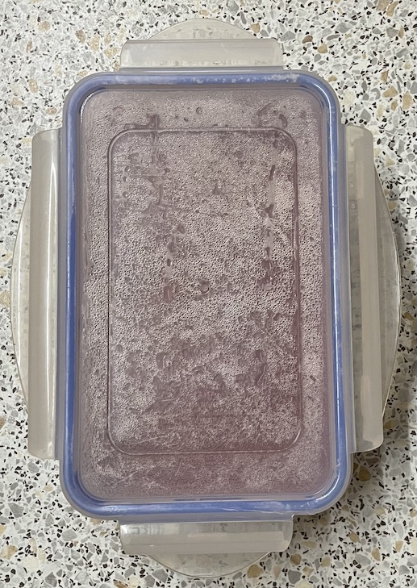
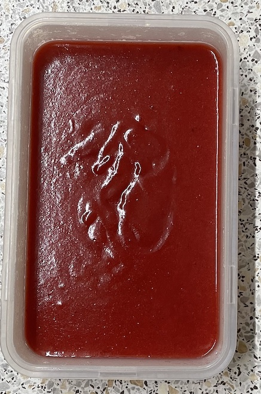
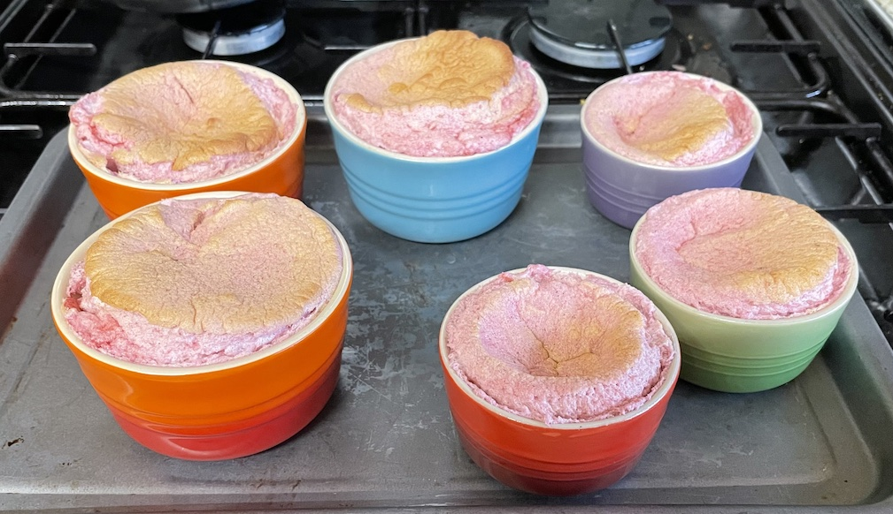

Berry souffle
Ramekins
- Butter inside of pots and place in fridge (brush butter upwards in direction souffles will rise)
- Roll sugar around each pot after cooling to coat
Cornflour
- Mix 2 tbsp cornflour with 3¼ tbsp cold water adjust for other amounts, ratio
cornflour:water 1.6 by volume
Puree
- Blitz in bowl
- 200g raspberries
- 200g strawberries cored and halved (weight after coring)
- Sieve mixture and add to saucepan
- Add and bring to boil whisking continuously
- Add
- 1 vanilla pod cut in half and seeds scraped out (or 2 tsp extract)
- cornflour mixture
- Whisk until puree starts to thicken
- Remove from heat, transfer to container with lid and allow to cool for 90 mins
- Transfer to fridge to chill for 30 mins
Souffle
- Whisk until soft peaks
- 4 (165g) egg whites
- few drops of lemon juice
- Add 1 tbsp at a time and whisk until stiff peaks
- Add spoon of egg whites to puree and mix well
- Add puree to egg whites and combine
- Fill ramekins with mixture
- bang pots down to get even fill
- level off with knife
- clean pots
- run
knife
around
rim of each pot
- Cook in preheated oven at 180°C for 15 mins or until risen by half, turning tray around halfway
- Dust with icing sugar and serve immediately
Notes
- Used 165g egg whites and 400g fruit, too much, could reduce by ⅓ (110g whites, 260g fruit)
- Use container with lid so skin does not form
- Can put raspberry at bottom of each ramekin
- Original recipe
Pics


